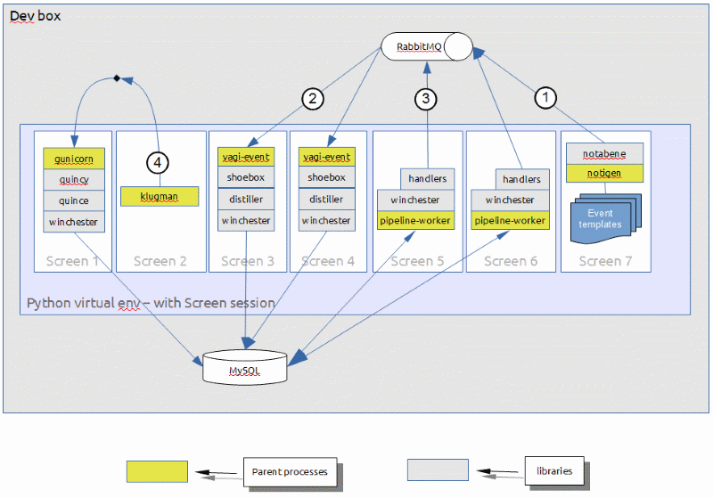
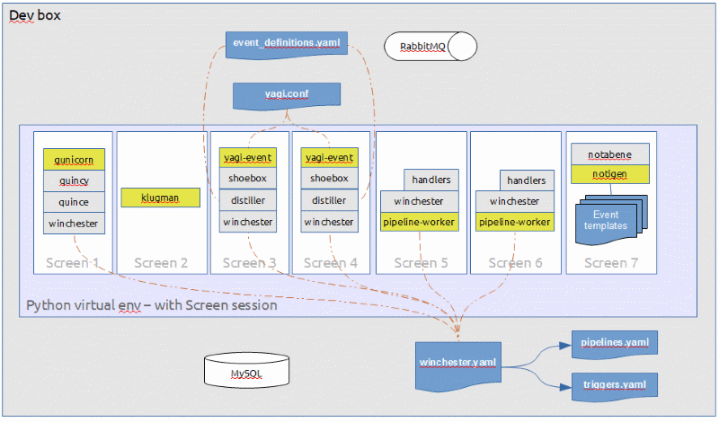
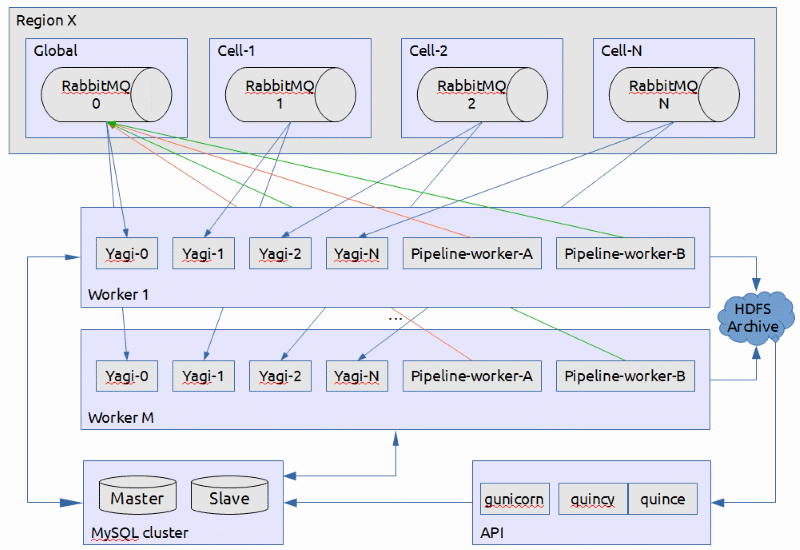

A Minimal StackTach.v3 deployment
The bare minimum StackTach.v3 deployment has the following components:
- a queuing system, like RabbitMQ, that contains the notifications.
- a MySQL database
- something to generate source notifications
- a yagi-event process to read the notifications and get them into winchester
- a winchester pipeline-worker process to do processing on ready streams
If you have a machine with MySQL and RabbitMQ on it, the stacktach-sandbox repo does the rest. The sandbox will set up a python virtual environment, install all the required components and run everything under a screen session.
The sandbox sets up seven screen pages that contain:
- The REST API server, via the gunicorn web server, quincy WSGI application and quince API implementation. Quince uses winchester to talk to the database.
- A bash shell for running the klugman command line tool.
- Two yagi-event workers. One per screen page.
- Two pipeline-worker workers. One per screen page.
- The notigen notification simulator.
You can see the flow of data in the diagram above:
- OpenStack Nova notifications are simulated by notigen and pumped into RabbitMQ via the notabene library. With the sandbox, there is no need to stand up a full OpenStack deployment.
- The yagi-event workers consume notifications from RabbitMQ, archives them via shoebox, distills them into events and stuffs them into streams via winchester
- The pipeline-worker workers look for ready streams and does pipeline processing on them.
- The user can use the klugman cmdline tool to talk to the REST API to perform stream and event operations/queries
In order to do all this, there are a number of configuration files required. Refer to the general documentation here or the particular libraries README file for configuration details. Of course, the names could be anything, these are just the ones we've settled on. The main configuration files include:
- yagi.conf - the configuration file that tells yagi how to connect to the queue and what to do with the notifications consumed.
- winchester.yaml - the master configuration file for winchester. It specifies the pipeline configuration to use, the stream definitions and the triggering rules.
- triggers.yaml - the detailed stream definitions and pipeline triggering rules
- pipelines.yaml - the pipeline handler definitions
- event_definitions.yaml - how the distiller should map notifications to events. Which traits to select or transform.
Where each of these files is used is illustrated in the diagram below:
This will get you going for a minimal StackTach.v3 installation. It's especially handy for dev environments as well as a way of just playing around. For low-volume/non-mission critical environments, this would be appropriate. Read up on the "build" command, below, for instructions on launching the sandbox environment. For larger deployments, you may want to look at how we deploy StackTach.v3 within Rackspace Public Cloud, below:
How StackTach.v3 is deployed at Rackspace
For Rackspace Public Cloud, OpenStack is deployed in many different regions and each region is comprised of many cells.
In this deployment scenario, we have a set of "worker" boxes that run the yagi-event workers (to consume notifications from RabbitMQ). We run one yagi-event worker per OpenStack cell. We also run the Winchester pipeline-workers on this box. The pipeline-worker manages pipeline processing for ready streams. We run as many pipeline-workers as needed to keep each core busy. Both the yagi-event and pipeline-worker processes are single threaded so we spawn more to keep the host busy. We add more servers like these to handle the load in the pipeline processing and/or the source queues.
Additionally, we have servers for the API nodes and the MySQL database. Load balancing the API servers and making MySQL highly available is left to the deployer.
The Ansible deployment scripts
In the StackTach Sandbox repo, there is an ansible directory that contains roles for the workers, the API nodes and the database. There is a fourth "common" role that is used by the other roles.
These scripts assume a multi-cell deployment where there is one StackTach.v3 deployment per region (each with it's own API servers and database). If you are not running with cells, pretend it's a single cell.
The servers are deployed in the following way:
# Everything is installed and deployed as:
user: stv3
group: stv3
Code:
/opt/stv3
Daemons:
/etc/init.d/
Config:
/etc/stv3
Logs:
/var/log/stv3
PIDs:
/var/run/stv3/
# To launch a service manually (logging in a different user)
sudo -s
su stv3
cd /opt/stv3/bin
. ./activate
./yagi-event --config /etc/stv3/yagi-cell-1.conf
The Build script
The StackTach Sandbox repo is the umbrella repo for all the other StackTach modules. It:
- can create a local dev environment for anyone wanting to contribute to StackTach or just play around with it
- can package StackTach into a python virtual environment and tarball it up for larger scale deployment. The ansible scripts use this tarball approach.
- git clones all the dependent python modules so you can develop locally and see your changes immediately and easily.
The sandbox readme will get you started, but the gory details are in the build.sh script. There are essentially three options:
./build.sh- run the local StackTach.v3 dev environment in a screen session../build.sh -t- run the tests on all the StackTach.v3 repos../build.sh -p- install StackTach.v3 into the virtual env and package it up into a tarball for deployment../build.sh -p -d- package and deploy the tarball. Currently this just lists the ansible incantation required to do the deployment.
The screencasts cover using the sandbox for local dev in more detail.